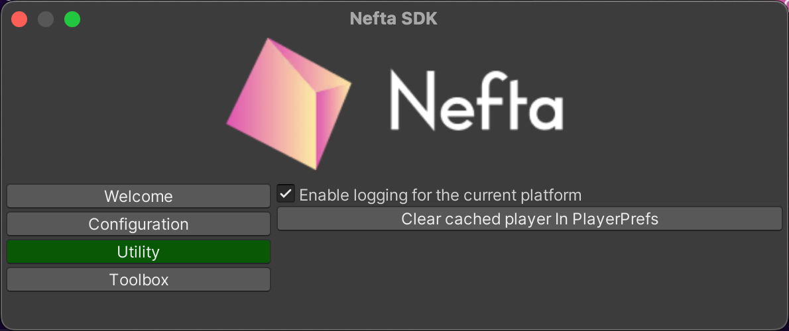

Introduction
Welcome to the Nefta Toolbox Unity Package! This package is designed to provide a set of tools and assets to help you quickly and easily create your own games and projects within the Unity game engine.
Requirements
Unity 2020.3 or later
Supported platforms
Standalone, IOS, Android, Webgl
NeftaEditorWindow
The Nefta Toolbox Unity Package comes with an EditorWindow. To access the window, you should click window in Unity menu bar and then Nefta SDK:
Usage
You can explore the example DemoScene and examine the source code of the scripts and components.
To get started using the package, configure the SDK in Unity menu: Window > Nefta SDK; Configuration > Marketplace Id with 'm-' from Nefta platform as parameter. In your code initialize toolbox by calling Nefta.ToolboxSdk.Toolbox.Init.
Logging
By default all logging is stripped out for best runtime performance. In order to enable them you have to add NEFTA_SDK_PROD define symbol. You can easily toggle this in Utility tab of Nefta SDK editor window: 
oAuth sign-in options
In order to use oAuth sign-in options, you have to set your oAuth provider client id and secret in OAuthPanel.cs.
A note about Asset Traits. You have to add your custom traits into the Traits class. This allows you to access all metadata relating to assets that are created through the dashboard.
A note about testing the authorisation methods. In order to test the different authorization methods, after each attempt, you will need to click Clear Logged In PlayerPrefs in the NeftaEditorWindow.
Documentation
You can find online documentation for the NeftaToolboxSDK here: https://docs.nefta.io/docs/neftaunity-sdk
The BE API reference can be found here: https://docs.nefta.io/reference/
While the Toolbox SDK API reference be be found here: https://neftaweb3.github.io/toolbox-for-unity/ToolboxSdk/Nefta.ToolboxSdk.Toolbox.html
Support
If you need help or have any questions about the Unity Package, please feel free to reach out to the development team by email at support@Nefta.io. We will do our best to assist you and resolve any issues as quickly as possible.